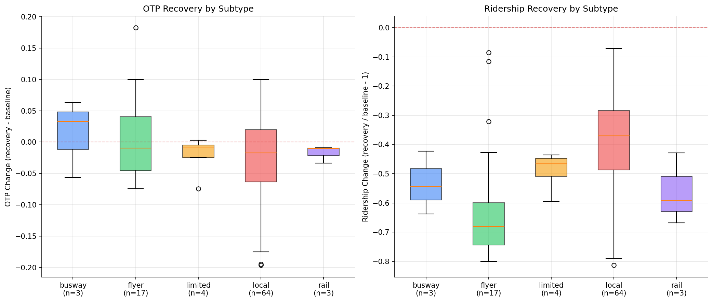
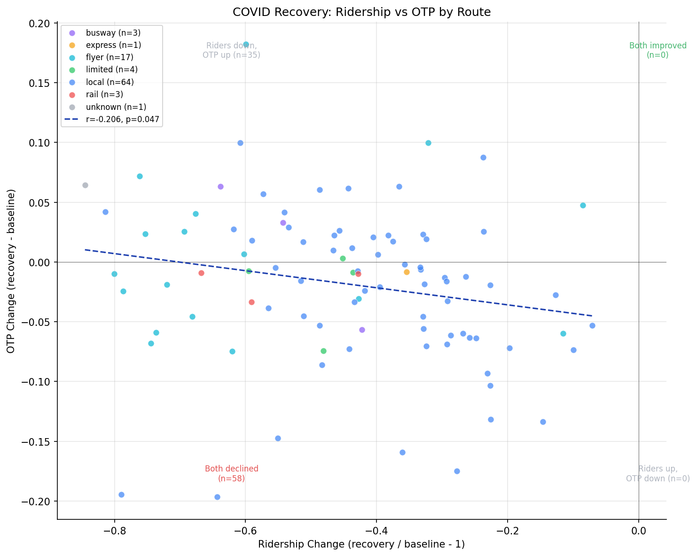

Analysis
21 - COVID Ridership vs OTP Recovery
Ridership and External Factors
Coverage: 2017-01 to 2025-11 (from otp_monthly, ridership_monthly).
Built 2026-05-15 22:40 UTC · Commit cf330ed
Page Navigation
Analysis Navigation
Data Provenance
flowchart LR
21_covid_ridership_recovery(["21 - COVID Ridership vs OTP Recovery"])
t_otp_monthly[("otp_monthly")] --> 21_covid_ridership_recovery
01_data_ingestion[["Data Ingestion"]] --> t_otp_monthly
u1_01_data_ingestion[/"data/routes_by_month.csv"/] --> 01_data_ingestion
u2_01_data_ingestion[/"data/PRT_Current_Routes_Full_System_de0e48fcbed24ebc8b0d933e47b56682.csv"/] --> 01_data_ingestion
u3_01_data_ingestion[/"data/Transit_stops_(current)_by_route_e040ee029227468ebf9d217402a82fa9.csv"/] --> 01_data_ingestion
u4_01_data_ingestion[/"data/PRT_Stop_Reference_Lookup_Table.csv"/] --> 01_data_ingestion
u5_01_data_ingestion[/"data/average-ridership/12bb84ed-397e-435c-8d1b-8ce543108698.csv"/] --> 01_data_ingestion
t_ridership_monthly[("ridership_monthly")] --> 21_covid_ridership_recovery
01_data_ingestion[["Data Ingestion"]] --> t_ridership_monthly
t_routes[("routes")] --> 21_covid_ridership_recovery
01_data_ingestion[["Data Ingestion"]] --> t_routes
d1_21_covid_ridership_recovery(("numpy (lib)")) --> 21_covid_ridership_recovery
d2_21_covid_ridership_recovery(("polars (lib)")) --> 21_covid_ridership_recovery
d3_21_covid_ridership_recovery(("scipy (lib)")) --> 21_covid_ridership_recovery
classDef page fill:#dbeafe,stroke:#1d4ed8,color:#1e3a8a,stroke-width:2px;
classDef table fill:#ecfeff,stroke:#0e7490,color:#164e63;
classDef dep fill:#fff7ed,stroke:#c2410c,color:#7c2d12,stroke-dasharray: 4 2;
classDef file fill:#eef2ff,stroke:#6366f1,color:#3730a3;
classDef api fill:#f0fdf4,stroke:#16a34a,color:#14532d;
classDef pipeline fill:#f5f3ff,stroke:#7c3aed,color:#4c1d95;
class 21_covid_ridership_recovery page;
class t_otp_monthly,t_ridership_monthly,t_routes table;
class d1_21_covid_ridership_recovery,d2_21_covid_ridership_recovery,d3_21_covid_ridership_recovery dep;
class u1_01_data_ingestion,u2_01_data_ingestion,u3_01_data_ingestion,u4_01_data_ingestion,u5_01_data_ingestion file;
class 01_data_ingestion pipeline;
Findings
Findings: COVID Ridership vs OTP Recovery
Summary
Zero of 93 routes have recovered to pre-COVID ridership levels (median -43%, all negative). Routes that lost more ridership tended to see better OTP recovery (r = -0.21, p = 0.047), weakly supporting the hypothesis that ridership recovery degrades OTP through crowding and longer dwell times.
Key Numbers
- Ridership recovery: median -43.4%, mean -44.5%; 0/93 routes at or above pre-COVID
- OTP recovery: 35/93 routes improved, 58/93 declined vs pre-COVID
- Correlation (ridership change vs OTP change): Pearson r = -0.21, p = 0.047; Spearman r = -0.29, p = 0.005
- Kruskal-Wallis (OTP delta by subtype): H = 2.89, p = 0.58 (not significant)
- Pre-COVID baseline: Jan 2019 -- Feb 2020; recovery period: Jan 2023 -- Oct 2024
- 93 routes with 6+ months in both periods
Observations
- The scatter plot falls entirely in the left half (all ridership declines). The two populated quadrants are "both declined" (58 routes) and "riders down, OTP up" (35 routes). There are zero routes in the "both improved" or "riders up, OTP down" quadrants.
- Flyers lost the most ridership (median -68%), consistent with the collapse of peak-hour commute demand. Despite this, flyers show the widest spread in OTP recovery (some improved substantially, others declined).
- Busway routes had the best OTP recovery (median +3.3 pp), likely because their dedicated right-of-way insulates them from the traffic impacts that affect other routes.
- Local bus routes (n=64) show the widest spread on both axes, reflecting the diversity of the category. Some locals improved OTP by 10 pp while others declined by 19 pp.
- The routes that improved OTP the most (P7 +18 pp, P69 +10 pp, 41 +10 pp) all lost substantial ridership (-32% to -61%), consistent with the idea that fewer riders means shorter dwell times and better schedule adherence.
Discussion
The weak negative correlation between ridership recovery and OTP recovery is consistent with a crowding mechanism: routes that regained more riders saw their OTP degrade (or fail to improve), while routes that stayed emptier ran closer to schedule. However, the effect is weak (r = -0.21) and the correlation is borderline significant (p = 0.047), so it should be interpreted cautiously.
The most policy-relevant finding is the universal ridership collapse: every single route is still below pre-COVID levels, with a median loss of 43%. This dwarfs any OTP effects. The system is running fewer riders on roughly the same infrastructure, and OTP has still declined for most routes -- suggesting that the OTP decline is driven by operational factors (staffing, vehicle maintenance, traffic congestion) rather than demand-side crowding alone.
The absence of subtype differences (Kruskal-Wallis p = 0.58) confirms Analysis 14's finding: no route type has recovered OTP systematically better or worse than others.
Caveats
- Regression to the mean: baseline OTP is negatively correlated with OTP delta (as found in Analysis 14 for the same OTP data), meaning routes with extreme pre-COVID OTP tend to regress toward the mean regardless of ridership changes. The headline correlation (r = -0.21, p = 0.047) may be partly artifactual due to RTM. The Spearman result (r = -0.29, p = 0.005) is more robust but the RTM caveat still applies.
- The ridership data ends Oct 2024; more recent ridership trends are not captured.
- "Recovery" is defined as a simple average comparison between two periods, not a trajectory analysis. A route could be on an upward trend that the period average does not fully reflect.
- The correlation between ridership change and OTP change does not establish causation; both could be driven by a third factor (e.g., service cuts, schedule changes).
- Flyer and busway subtypes have small sample sizes (n=17 and n=3), limiting subtype-level conclusions.
- Ridership data is weekday only; weekend recovery patterns may differ.
Review History
- 2026-02-27: RED-TEAM-REPORTS/2026-02-27-analyses-19-25.md — 1 significant issue. Added RTM test (baseline OTP vs OTP delta: r=-0.18, p=0.08). Borderline RTM; caveat added.
Output

box plots by route subtype.

ridership recovery ratio vs OTP delta.
No interactive outputs declared.
per-route recovery metrics.
Preview CSV
Methods
Methods: COVID Ridership vs OTP Recovery
Question
Did routes that recovered ridership fastest also recover OTP? Or does ridership recovery degrade OTP (e.g., through crowding and longer dwell times)?
Approach
- Define pre-COVID baseline as Jan 2019 -- Feb 2020 for both ridership and OTP.
- Define recovery period as Jan 2023 -- Oct 2024 (post-stabilization).
- For each route, compute ridership recovery ratio (recovery avg / baseline avg) and OTP recovery delta (recovery avg - baseline avg).
- Scatter plot ridership recovery vs OTP recovery, colored by mode/subtype.
- Test correlation (Pearson and Spearman) between ridership recovery and OTP recovery.
- Test for regression to the mean: compute correlation between baseline OTP and OTP delta. A significant negative correlation indicates RTM, which would bias the recovery correlation.
- Stratify by route subtype (local, express, premium, rail) and test for group differences.
Data
| Name | Description | Source |
|---|---|---|
otp_monthly |
route_id, month, OTP | prt.db table |
ridership_monthly |
route_id, month, day_type='WEEKDAY', avg_riders | prt.db table |
routes |
route_id, mode for subtype classification | prt.db table |
Notes: Join on route_id and month; restrict to overlap period. Exclude routes missing from either dataset or with fewer than 6 months in either period.
Output
output/recovery_scatter.png-- ridership recovery ratio vs OTP deltaoutput/recovery_by_subtype.png-- box plots by route subtypeoutput/recovery_data.csv-- per-route recovery metrics
Source Code
|
Sources
| Name | Type | Why It Matters | Owner | Freshness | Caveat |
|---|---|---|---|---|---|
| otp_monthly | table | Primary analytical table used in this page's computations. | Produced by Data Ingestion. | Updated when the producing pipeline step is rerun. | Coverage depends on upstream source availability and ETL assumptions. |
Upstream sources (5)
|
|||||
| ridership_monthly | table | Primary analytical table used in this page's computations. | Produced by Data Ingestion. | Updated when the producing pipeline step is rerun. | Coverage depends on upstream source availability and ETL assumptions. |
Upstream sources (5)
|
|||||
| routes | table | Primary analytical table used in this page's computations. | Produced by Data Ingestion. | Updated when the producing pipeline step is rerun. | Coverage depends on upstream source availability and ETL assumptions. |
Upstream sources (5)
|
|||||
| numpy | dependency | Runtime dependency required for this page's pipeline or analysis code. | Open-source Python ecosystem maintainers. | Version pinned by project environment until dependency updates are applied. | Library updates may change behavior or defaults. |
| polars | dependency | Runtime dependency required for this page's pipeline or analysis code. | Open-source Python ecosystem maintainers. | Version pinned by project environment until dependency updates are applied. | Library updates may change behavior or defaults. |
| scipy | dependency | Runtime dependency required for this page's pipeline or analysis code. | Open-source Python ecosystem maintainers. | Version pinned by project environment until dependency updates are applied. | Library updates may change behavior or defaults. |